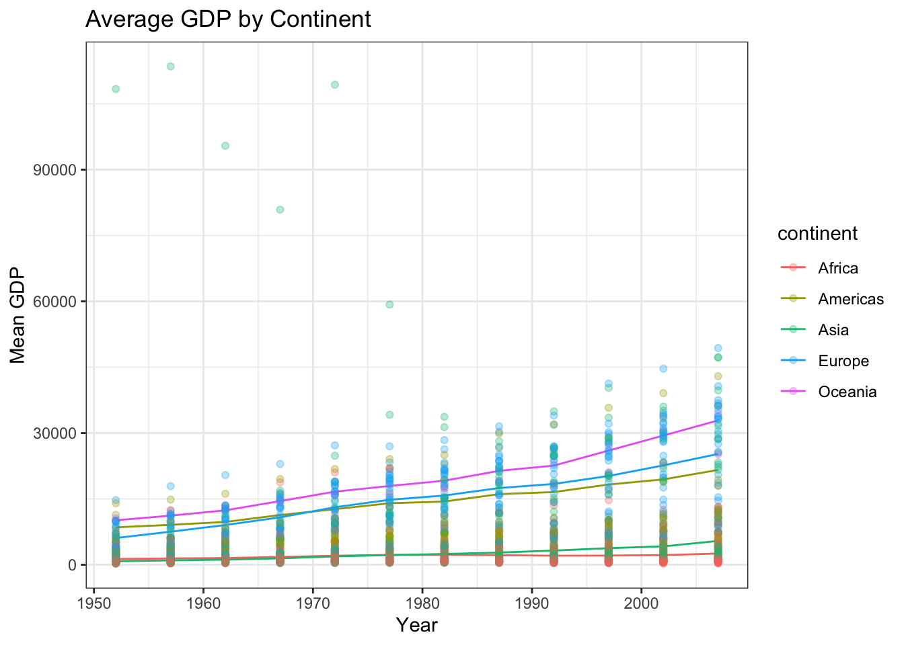
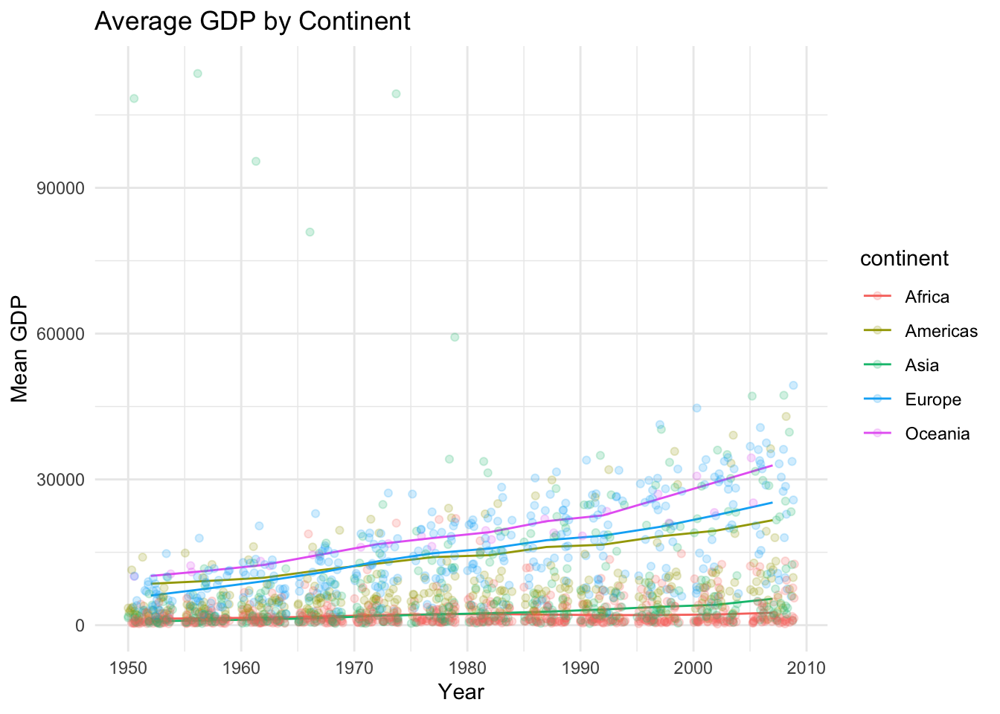
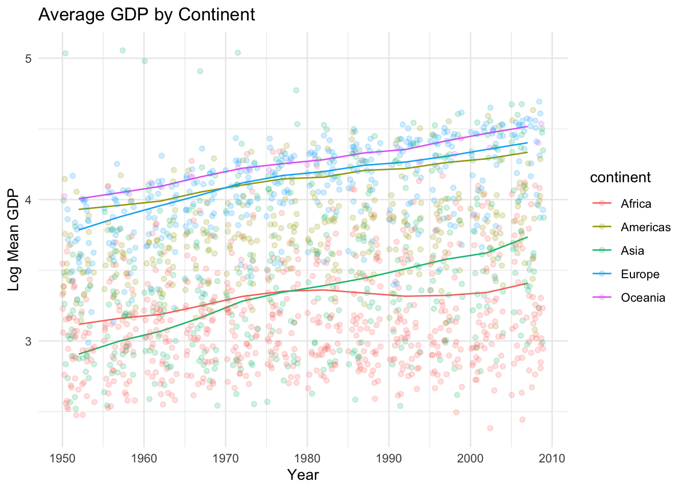

library(tidyverse)
library(gapminder)
library(ggplot2)lab1_practice
Attach tidyverse and gapminder package
For each year and continent, summarize the average per-capita GDP across all countries in the continent. Hint: don’t just average the country-level values - need to consider country populations
data("gapminder")
gap_clean <- gapminder %>% janitor::clean_names()
### it is a weighted average!
continent_mean_gdp <- gapminder %>%
group_by(year, continent) %>%
summarize(mean_gdp = sum(gdpPercap * pop) / sum(pop),
### let's log transform the data in our analysis
log_mean_gdp = log(mean_gdp)) %>%
ungroup()plot the continent-level GDP values in a scatter plot. Bonus, plot the country level values as well, with a low alpha to fade them into the background
gap_plot_df <- gap_clean %>%
rename(mean_gdp = gdp_percap)
gdp_plot <- ggplot(continent_mean_gdp, aes(x= year, y = mean_gdp, color = continent)) + geom_line()+
labs(x= "Year", y= "Mean GDP") +
ggtitle("Average GDP by Continent") + theme_bw() + geom_point(data = gap_clean, aes(y = gdp_percap), alpha = 0.3)
gdp_plot
gdp_plot_2 <- ggplot(continent_mean_gdp, aes(x= year, y = mean_gdp, color = continent)) + geom_line()+
labs(x= "Year", y= "Mean GDP") +
ggtitle("Average GDP by Continent") +
geom_jitter(data = gapminder, aes(y = gdpPercap), alpha = .2) +
theme_minimal()
gdp_plot_2
## why does jitter work better than point?redo the scatterplot, but this time, log transform the GDP data either in the df using ‘mutate’ or on the plot with with scale_y_log10()
gdp_plot_log <- ggplot(continent_mean_gdp, aes(x= year, y = log10(mean_gdp), color = continent)) + geom_line()+
labs(x= "Year", y= "Log Mean GDP") +
ggtitle("Average GDP by Continent") +
geom_jitter(data = gapminder, aes(y = log10(gdpPercap)), alpha = .2) +
theme_minimal()
gdp_plot_log
Based on the plots, choose either the regular or log transformed data, and use a linear regression to estimate annual change in per capita GDP ** OR log(per capita GDP) accounting for continent
annual_gdp_model <- lm(log10(mean_gdp) ~ year + continent, data = continent_mean_gdp)
annual_gdp_model
Call:
lm(formula = log10(mean_gdp) ~ year + continent, data = continent_mean_gdp)
Coefficients:
(Intercept) year continentAmericas continentAsia
-14.78383 0.00913 0.84864 0.04800
continentEurope continentOceania
0.85343 0.97369 summary(annual_gdp_model)
Call:
lm(formula = log10(mean_gdp) ~ year + continent, data = continent_mean_gdp)
Residuals:
Min 1Q Median 3Q Max
-0.17948 -0.02363 0.00779 0.03457 0.14683
Coefficients:
Estimate Std. Error t value Pr(>|t|)
(Intercept) -1.478e+01 1.005e+00 -14.714 <2e-16 ***
year 9.130e-03 5.075e-04 17.991 <2e-16 ***
continentAmericas 8.486e-01 2.770e-02 30.638 <2e-16 ***
continentAsia 4.800e-02 2.770e-02 1.733 0.0888 .
continentEurope 8.534e-01 2.770e-02 30.811 <2e-16 ***
continentOceania 9.737e-01 2.770e-02 35.153 <2e-16 ***
---
Signif. codes: 0 '***' 0.001 '**' 0.01 '*' 0.05 '.' 0.1 ' ' 1
Residual standard error: 0.06785 on 54 degrees of freedom
Multiple R-squared: 0.9805, Adjusted R-squared: 0.9786
F-statistic: 541.8 on 5 and 54 DF, p-value: < 2.2e-16log_gdp_coef <- coefficients(annual_gdp_model)
log_gdp_coef (Intercept) year continentAmericas continentAsia
-14.783832231 0.009130041 0.848635620 0.047999675
continentEurope continentOceania
0.853433270 0.973685444 write a sentence or two describing the trends in the plots write a sentence or two to explain the coefficients in the linear model, including statistical significance. which continent is the “reference” continent? why might that be? what do the coefficients on each continent represent? Do they make intuitive sense? Does a linear model seem like a good way to approach these data? why or why not?
when done, render your quarto doc, then stage, commit, and pushback to Github. good you did it